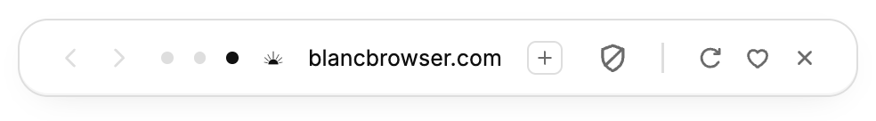

Links from other apps open here. You can change this anytime in Settings.
Bring your bookmarks
Imports happen on this device — nothing is uploaded.
Meet the island
Tabs, search and navigation, all in one place.

Quiet Island with Back and Forward, three tab dots, the site's favicon and address, New Tab, blocker shield, Reload, Favorite and Close.
Ctrl+L to open it.
Block ads & trackers
Blocks known ads and trackers using bundled rules. It cannot stop every tracker. Turn it off per-site with /off-leash.
Block ads & trackers
Choose what Blanc may send
Blanc checks for app updates and ships its blocking lists with each release. These optional choices start sending only after you save them by continuing. You can turn either off now or later in Settings:
Search suggestionsEligible typed prefixes go to your selected search provider, including Google if selected. Private tabs and recognized sensitive-looking text are excluded.
Help improve BlancPseudonymous launch and feature counts go to Blanc’s Cloudflare collector and its optional Google Analytics mirror: random install/session IDs (install ID hashed by the collector), version, platform, architecture, coarse OS and fixed feature names. No browsing data; private-tab feature activity is excluded.